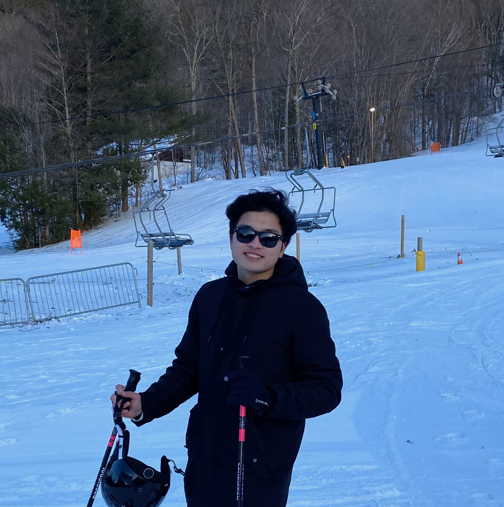

|
Vu (Anthony) Le I'm a first year computer science PhD student at Manning College of Information and Computer Sciences, UMass Amherst in Amherst, Massachusetts, where I am advised by VP Nguyen and Yilun Xu from Berkeley Lab on sustainable quantum computing. Prior to joining UMass Amherst, I worked with Bo Han on systems for telepresence and Hai Phan on face identification using vision transformers. |
 |
{kind=link}
ResearchI'm interested in quantum computing , computer architecture, deep learning, and image processing. Most of my research is about computer systems, systems and computer vision applications. Some papers are highlighted. |

|
MagicStream: Bandwidth-conserving Immersive Telepresence via Semantic
Communication
Ruizhi Cheng, Nan Wu, Vu Le, Eugene Chai, Matteo Varvello , Bo Han, SenSys, 2024 (top conference) arXiv MagicStream, a first-of-its-kind semantic-driven immersive telepresence system that effectively extracts and delivers compact semantic details of captured 3D representation of users, instead of traditional bit-by-bit communication of raw content. |

|
Fast and Interpretable Face Identification for Out-Of-Distribution Data
Using Vision Transformers
Hai Phan, Cindy Le, Vu Le Yihui He, Anh Totti Nguyen WACV 2023 Using vision transformers for out-of-distribution data face identification, runs twice faster while achieving comparable performance with the state of the art DeepFace-EMD model. |